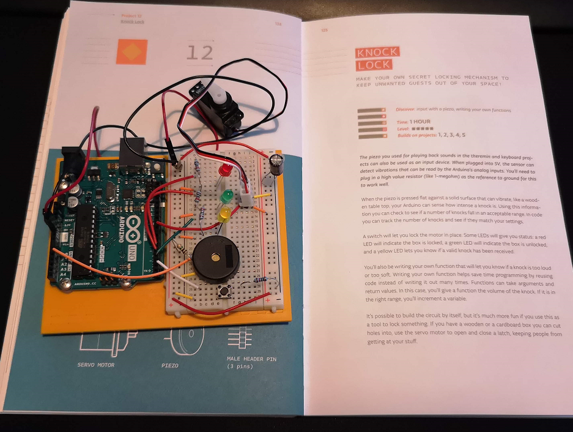

Arduino og Elektronikk 101
knock lock
Endte opp med å lage prosjektet i boka. Jeg hadde egentlig lyst til å lage noe mer avansert, men både elektronikk og programmering er helt nytt, og jeg synes det er vanskelig å se løsningene.
Har brukt tiden på å danne meg et bilde av hvordan det hele henger sammen.
Knock lock er en lås som man kan låse opp ved å banke på den, tanken var å programmere inn et "secret knock" man måtte ha for å åpne den opp, men tiden gikk fra meg.
Som du ser på videoen har jeg ikke gått utover prosjektet i boka.
Her er alle delene jeg brukte i prosjektet.
- 1x 10 KOhm Resistor
- 1x 1 MOhm Resistor
- 3x 220 Ohm Resistor
- Piezo
- Knapp/Bryter
- Capacitor
- Rød, grønn og gul LED
- Servo-motor